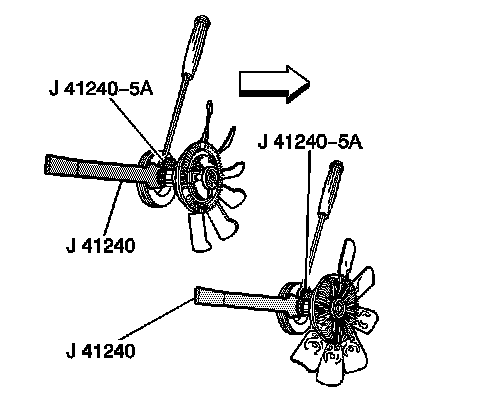
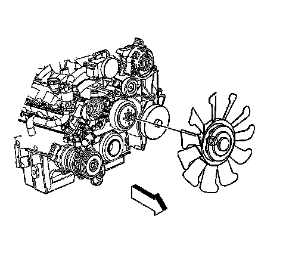
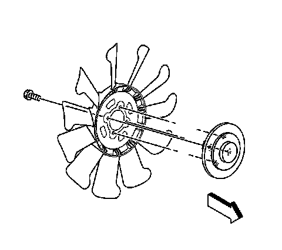
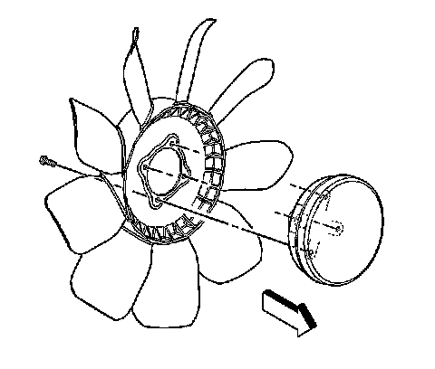

Fan Replacement (Mechanical)
Fan Replacement (Mechanical)
Tools Required
J 46406 Fan Clutch Remover and Installer
Removal Procedure

1. Remove the upper fan shroud. Refer to Engine Coolant Fan Upper Shroud Replacement (Mechanical).
2. Install the J 46406 to the fan clutch.

3. Remove the fan hub nut from the water pump in a counterclockwise rotation.

4. Remove the fan clutch bolts from the rear of the fan blade.
5. Separate the fan clutch from the fan blade.
Installation Procedure
Caution: Do not use or attempt to repair a damaged cooling fan assembly. Replace damaged fans with new assemblies. An unbalanced cooling fan could fly apart causing personal injury and property damage.

1. Install the fan clutch onto the fan blade.
Notice: Refer to Fastener Notice.
2. Install the fan clutch bolts
Tighten the bolts to 23 N.m (17 lb ft).
3. Install the fan assembly.
4. Install the J 46406 to the fan clutch.
Tighten the nut clockwise to 56 N.m (41 lb ft).
5. Install the upper fan shroud. Refer to Engine Coolant Fan Upper Shroud Replacement (Mechanical).